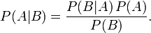
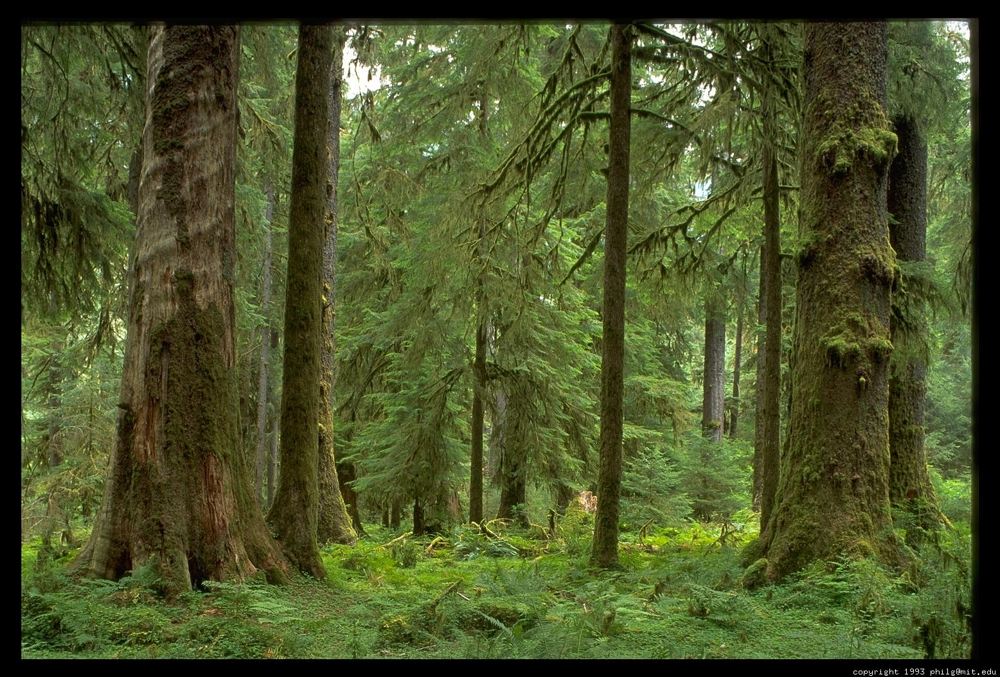

name: inverse layout: true class: left, top, inverse --- ## Classification: Bayes --- ## Confusion Matrix + What are the ways that classification can be wrong? | | Predict: Positive | Predict: Negative | |------------------|-------------------|-------------------| | Actual: Positive | True Positive | False Negative | | Actual: Negative | False Positive | True Negative | ??? ## Obtain Data + How do we obtain this data? --- ## Testing Data + Data used to test a learned model + Test data was not used to learn + Where does test data come from? ??? ## Not from storks + img: http://adamsparkadventures.blogspot.com/2011/09/stork-watch.html --- ## Training Data + Set aside a portion of training data to test with + Test data: --- ## Set Aside Testing Testing Data | Training Data ??? ## Colors + Red: Testing + Green: Training --- ## Cross Validation Train and test model with different subsets of data ??? ## Testing the model + This is used to test the *model* + How well does it perform with a variety of inputs? + Is it robust against outliers --- ## K-Fold Validation Test against K sections of the data ??? ## Statistical Significance + Similar to the concept in stats: the more distinct samples you have, the better you know your data --- ## K-Fold Validation --- ## Bayes Theorem .white-background[  ] Can calculate a posterior given priors ??? ## Read + Probability of A given B equals probability of B given A times prob of A divided prob of B + Importance is that we can figure out what future probabilities are based on what we've already seen --- ## Spam .white-background[ <img src="img/bayes-spam.png"/> ] Find the probability of spam given it contains a particular word ??? ## Words + What words would you associate with spam? + Are these the same across all people? + Why might you want to train a classifier per person? --- ## Multiple Words + How to calculate probabilities of multiple independent events occurring? ??? ## Naive + Words are not independent + San? Francisco is more likely --- ## Multiple Words + How to calculate probabilities of multiple independent events occurring? + Model words as independent events + Multiply probabilities ??? ## Naive + Words are not independent + San? Francisco is more likely + But works surprisingly well in practice --- ## Practical concerns + What is the probability of a word we've never seen before? ??? ## Solutions + divide by 0. Instead, add 1 to all words --- ## Practical concerns + What is the probability of a word we've never seen before? + Underflow: multiplying small numbers eventually causes rounding to 0 ??? ## Solutions + use log of probabilities --- ## Practical concerns + What is the probability of a word we've never seen before? + Underflow: multiplying small numbers eventually causes rounding to 0 + Normalizing words: v1agra ??? ## Solutions + come up with rules --- ## Ensemble + Using multiple models simultaneously + Run all classifiers over new data, take majority vote + Netflix Prize won with combination of models from several teams ??? ## Requirements + Nice thing is that the diversity of models is important, and not so much the accuracy of any single model --- ## Bootstrap Aggregating + Bagging: training data collected with replacement + Learn models on different samples + Run models on new incoming data <img src="img/bagging.png"/> ??? *TODO should both be indented?* ## Trade-offs + Fairly simple: + Majority vote + Train models independently + img: http://cse-wiki.unl.edu/wiki/index.php/Bagging_and_Boosting --- ## Boosting + Train classifier to catch what the last one missed + Train and test first classifier + Find classification failures + Weight those failures more heavily in training a new model + Weight models by their accuracy ??? ## Trade-offs + Boosting can be susceptible to outliers + Takes longer to train + Observed to be more accurate --- ## Many Decision Trees + Train trees with random selection of attributes and a subset of the data + Combine trees using majority or weights + What to call many arbitrarily picked trees? --- ## Random Forests + Used successfully in many recent competitions + Carry over robustness properties from individual decision trees + Can be trained in parallel  ??? ## Parallel + Potentially good fit for MapReduce paradigms